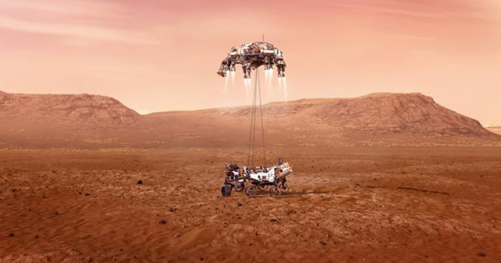
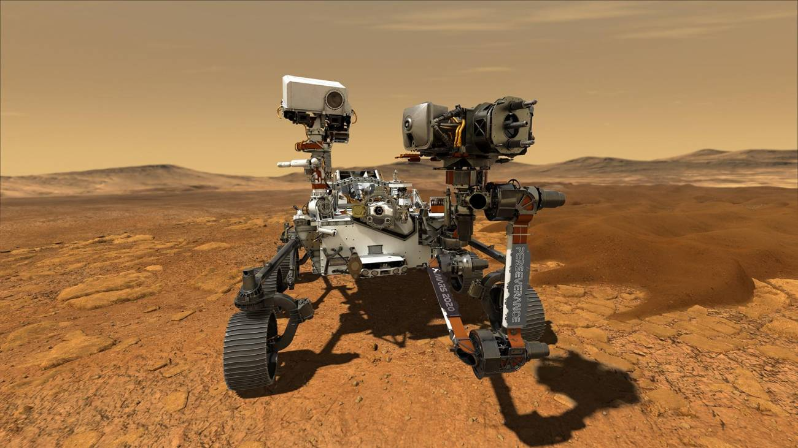

La mision curiosity
El rover que explora la superficie marciana
es una misión espacial que incluye un astromóvil de exploración marciana dirigida por la NASA. Programada en un principio para ser lanzada el 8 de octubre de 2009 y efectuar un descenso de precisión sobre la superficie del planeta en 2010 entre los meses de julio y septiembre,45 fue finalmente lanzada el 26 de noviembre de 2011 a las 10:02 a. m. EST, y aterrizó en Marte exitosamente en el cráter Gale el 6 de agosto de 2012, aproximadamente a las 05:31 UTC, enviando sus primeras imágenes a la Tierra.
La mison perserverance
Un exito al descender a marte
Perseverance (en español, Perseverancia), apodado Percy, es un vehículo Mars rover diseñado y fabricado por el Laboratorio de Propulsión a Reacción para explorar el cráter Jezero de Marte como parte de la misión Mars 2020 del Programa de Exploración de Marte de la NASA. Fue lanzado el 30 de julio de 2020 a las 11:50 UTC1 desde Cabo Cañaveral en Florida y aterrizó en Marte el 18 de febrero de 2021 a las 20:56 UTC.2